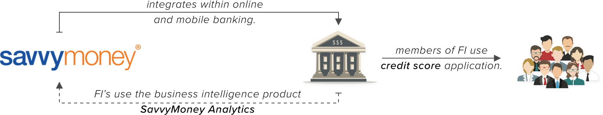
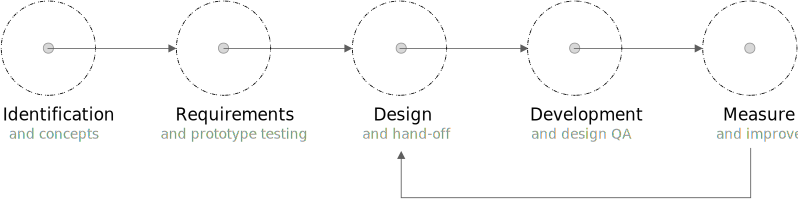

SavvyMoney: Integrated credit score solution for financial institutions.
SavvyMoney Inc. is a B-B-C fin-tech startup. It ofers a comprehensive credit score solution (score, report and monitoring) to financial institutions (FI's) by integrating within their online and mobile banking platforms. It also ofers them (FI's) a business intelligence tool, SavvyMoney Analytics, to analyze the credit portfolio of their member-base and explore lending opportunities.
{kind=link}
my role
When I joined SavvyMoney in 2016, I was the only designer on the team. I started as a UX designer focusing mainly on enhancing the users’ experience with the credit score application. Since then, not only have I grown my role, but also contributed towards creating a strong design culture in the company. I work within the product team, lead a team of designers and UI developers and work closely with the partnerships team to plan and implement enhancements and/or new feature roll-outs. I also wear the business analyst hat and analyze the impact of design interventions and evaluate growth of both product and partners.
design-led product development process
I take pride in working closely with the product team in institutionalizing a product development process which is pro-design, end-to-end. The human-centered design philosophy forms the foundation of the process that instills the idea of technology and design working together for successful releases.
{kind=link}
product evolution
When I started, the credit application was limited to the credit score, factors that affect the score, credit monitoring, a page dedicated to the FI's offers and a blog which was largely un-responsive. I have worked on the complete overhaul of the application along with designing additional features.

product snapshopt
A snapshot of the major product releases are described below. Each of these projects followed the product development process while improving upon the process or adding new tools for efficiency.
Credit score, delivered straight to online banking.
Score widget integrated within online banking using iframe solutions and apis.
Introduced notification badge and direct navigation to most used information on the credit application.
New design resulted in 30 fold increase in user engagement.
Responsive components provide flexibilty over widget dimensions.
Live on over 150+ partners across 10+ online banking platforms.
{kind=link}
It (score inside online banking) kind of gives me an ongoing goal. This is what my score is and if I see that every time I log in, it kind of gives me some motivation and a little side project to keep improving.
Credit score, delivered straight to online banking.
Score widget integrated within online banking using iframe solutions and apis.
Introduced notification badge and direct navigation to most used information on the credit application.
New design resulted in 30 fold increase in user engagement.
Responsive components provide flexibilty over widget dimensions.
Live on over 150+ partners across 10+ online banking platforms.